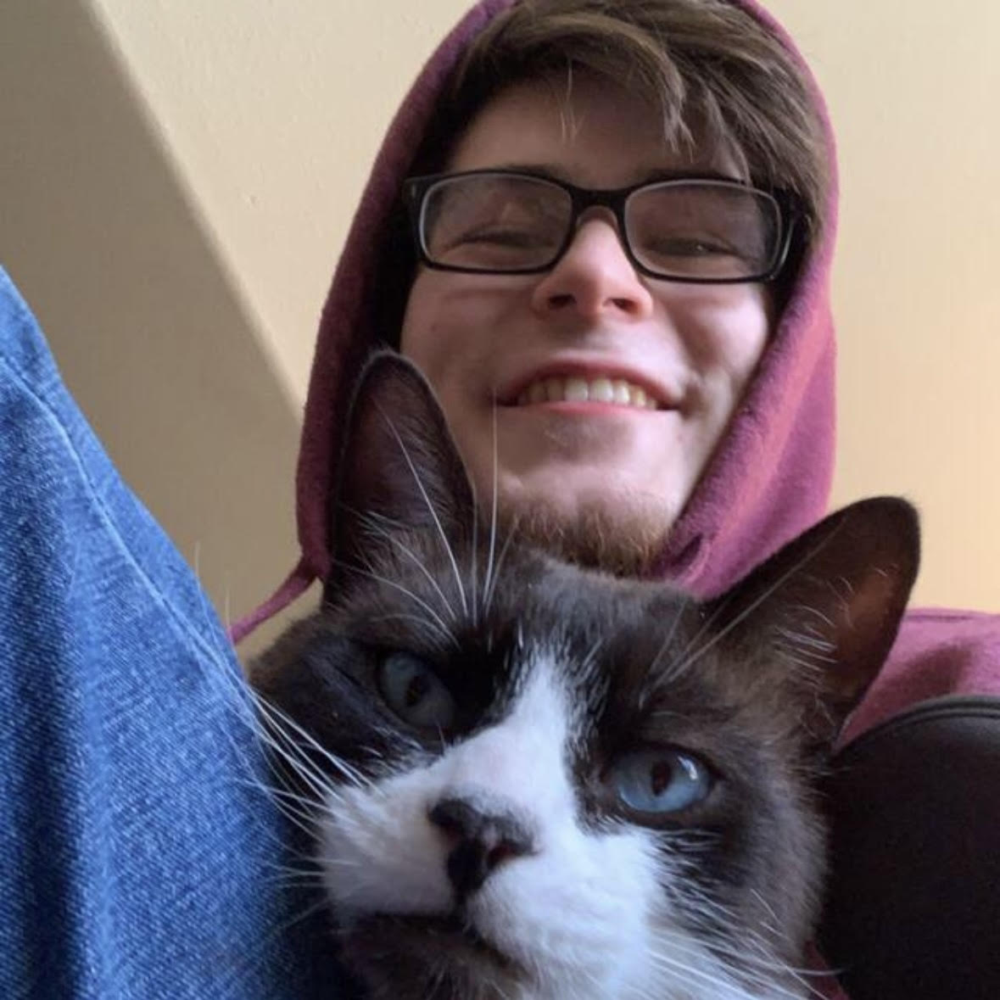

I'm in my thrid year of pursuing a Computer Science degree. As of today, I am have chosen the Applied option with a data science focus, but that is subject to change.
When I was in middle school, a friend and I learned basic html and batch and would create games in windows notepad. Obviously this is very crude and basic, but it was a lot of fun and my introduction to html
I am looking forward to learning how to integrate CSS and javascript into html. I knew the very bascis of html, quite a bit of javascript, and no css, so learning how to use them in tandem to build a webpage is exactly the skill I need to add to my toolset.
Yes, of course! While you will be disappointed in the fact I won't be active enough to earn your extra credit, I plan to rely heavily on it as a resource for my learning.
My cat, Apollo, provides me with endless entertainment. He is a snowshow siamese, meaning he is large, needy, energetic, and talkative. My family has always had cats, and a lot of the people I know have cats, but Apollo is so weird. Sometimes, it is hard to beleive he is a cat! Here's a picture of Apollo and me:
